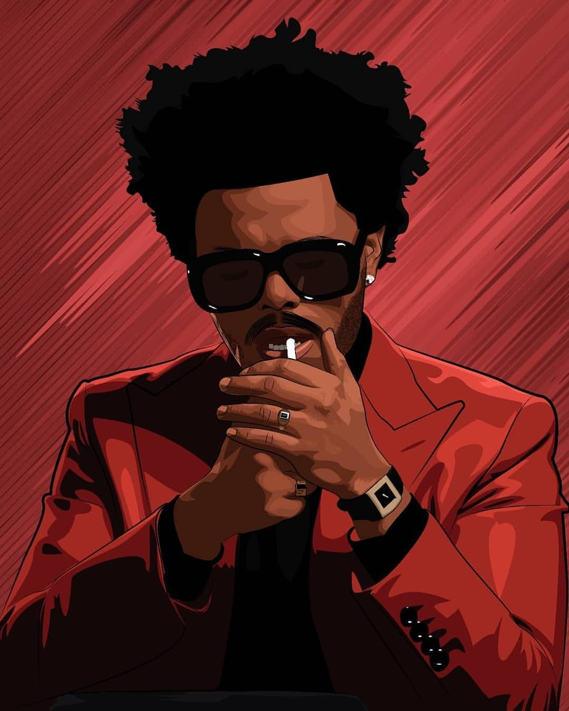

About
Who Is The Weeknd?
The Weeknd, originally Abel Tesfaye, broke into the music scene with the 2011 mixtape House of Balloons. He went on to work with Drake, Wiz Khalifa and others, while building his own career as an artist. In 2015, the Weeknd enjoyed huge success with the Grammy-winning album Beauty Behind the Madness, which boasted the hit single “Can’t Feel My Face.” His follow-up album, Starboy (2016), also won a Grammy and featured collaborations with artists such as Daft Punk.